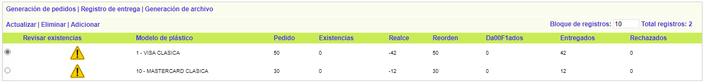
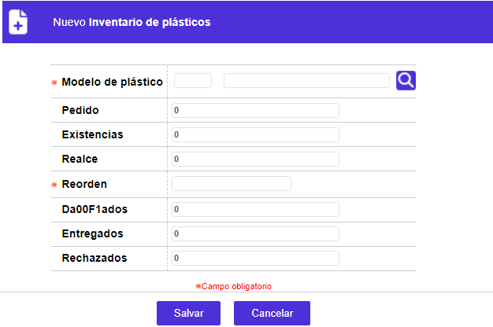
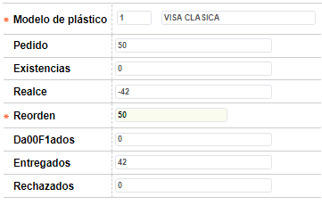
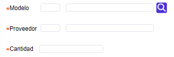

Inventario de plásticos
Mediante esta opción, la entidad puede gestionar el control de los plásticos, tanto los nuevos que ingresan como los entregados a los terceros para ser realzados (embosados).
El manejo del inventario de los plásticos requiere, entre otras condiciones que, el campo Control de remisión de plásticos, contenido en la opción Parámetros operativos se encuentre marcado en "Sí", que se aplique Control de inventario a los plásticos, bien sea de manera manual o mediante el proceso de Cargue de archivo de inventario , y que se aplique acuse de recibo para las diferentes tarjetas.
Con el fin de poder aplicar masivamente el control de inventario y, el acuse de recibo mediante los cargues contenidos en el aplicativo, se necesita que en la estructura del archivo de realce, se parametrice la secuencia para todos los modelos de la entidad.
La opción cuenta con los enlaces Generación pedidos, Registro de entrega y Generación de archivo, que invocan otros formularios que complementan el proceso de inventario de los plásticos.
El formulario contiene un filtro que le permite al usuario seleccionar por medio de una lista de valores el modelo de plástico para el que se desea consultar la información.
Si el usuario no selecciona ningún registro para consutar, al ingresar al formulario inicial éste por defecto despliega la totalidad de los registros existentes. El primer campo del formulario, Revisar existencias, muestra un indicador para aquellos modelos para los cuales el sistema detecta que las existencias actuales se encuentran por debajo del punto de reorden y por lo tanto deben ser revisados para generar el pedido correspondiente al proveedor.

El formulario contiene las opciones Actualizar, Eliminar y Adicionar.
Adicionar: Al activar ese enlace se despliega un formulario con los siguientes campos.

Descripción de campos
|
Modelo de plástico |
Campo obligatorio con lista de valores que permite seleccionar el modelo de plástico para el que se desea llevar el inventario a través de la presente opción. |
|
Pedido |
Este campo indica la cantidad de unidades del modelo que le han sido solicitadas al proveedor del mismo. Por defecto al adicionar un registro se muestra con el valor '0' |
|
Existencias |
Campo que muestra la cantidad de unidades del modelo plástico que actualmente tiene disponible la entidad en su inventario y que resulta de sumar las cantidades recibidas del proveedor como resultado de los pedidos efectuados y restarle los plásticos que han sido utilizados durante el proceso de realce. Por defecto al adicionar un registro se muestra con el valor '0' |
|
Realce |
Este campo indica la cantidad de unidades del modelo que le han sido entregadas a los diferentes proveedores de realce como resultado de la generación de los archivos de realce de tarjetas que utilizan este modelo de plástico. Por defecto al adicionar un registro se muestra con el valor '0' |
|
Reorden |
Campo obligatorio en el cual se indica la cantidad mínima de existencias que por modelo debe tener disponibles la entidad para atender sus demandas de plásticos para el realce de las tarjetas, y que constituye el punto en el cual se debe generar un nuevo pedido al proveedor. |
|
Dañados |
Este campo indica la cantidad de unidades del modelo que se han dañado o averiado durante los procesos de realce. Por defecto al adicionar un registro se muestra con el valor '0' |
|
Entregados |
Este campo indica la cantidad de unidades del modelo que después de haber sido realzadas han sido entregadas efectivamente a los clientes titulares de las tarjetas. Por defecto al adicionar un registro se muestra con el valor '0' |
|
Rechazados |
Campo que muestra la cantidad de unidades del modelo que después de haber sido realzadas no pudieron ser entregadas o fueron rechazadas por los clientes titulares de las tarjetas. Por defecto al adicionar un registro se muestra con el valor '0' |
Actualizar: si el usuario selecciona un registro e invoca la opción Actualizar, se despliega un formulario en el cual el único campo modificable es Reorden para permitirle a la entidad modificar la cantidad mínima de existencias que se requiere tener disponible.

Generar archivo de pedidos: si el usuario invoca el hipervínculo generar archivo, el sistema despliega un nuevo formulario en el cual se registra el nombre del archivo de salida que contiene la información de los pedidos generados para los diferentes modelos plásticos.

Descripción de campos
|
Código |
Campo obligatorio con lista de valores de la que se selecciona el nombre el archivo a generar con la información de los pedidos de plásticos efectuados. |
|
Fecha generación |
En este campo obligatorio, se registra en formato YYYY-MM-DD la fecha a la que corresponde el archivo generado. |